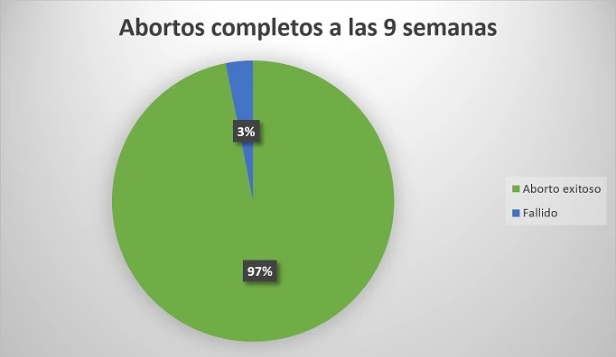
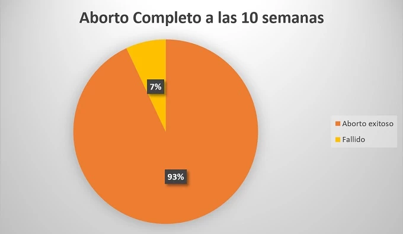
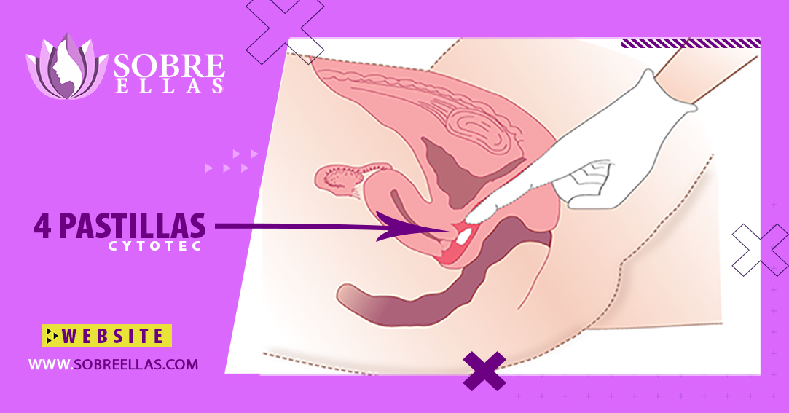

Como abortar a las 10 semanas de embarazo con CYTOTEC vía oral y vaginal
-
addContenido
Para abortar un embarazo con menos de 10 semanas el medicamento se debe tomar entre 1 y 2 días, a través de la vagina o entre la encía y la mejilla.
Porcentaje de aborto completo de acuerdo con la semana de embarazo:
 Serie de riego en un aborto de acuerdo a la semana de embarazo
- Mujeres que continúan embarazadas:
- Con 9 semanas de embarazo el 1%.
- Con 10 semanas de embarazo el 3%
- Mujeres que mantienen restos del embarazo en sus cuerpos:
- Con 9 semanas de embarazo el 2%
- Con 10 semanas de embarazo el 3%
- Mujeres las cuales necesitan intervención quirúrgica para completar el aborto:
- Con 9 semanas de embarazo el 3%
- Con 10 semanas de embarazo el 7%
Porcentajes de mujeres en los cuales se presentan efectos segundarios en un aborto con pastillas Cytotec
- Nauseas:
- Con 9 semanas de embarazo se presenta en el 29% de los casos
- Con 10 semanas de embarazo las náuseas se presentan en el 50%
- Vomito:
- En el 9% de los casos con 9 semanas de embarazo
- Y 46% para las 10 semanas
- Diarrea:
- A las 9 semanas de embarazo 5%
- Con 10 semanas 17%
- Resfriado:
- Con 9 semanas de embarazo se presenta en 15% de los casos.
- Con 10 semanas 33%
- Dolor de cabeza:
- Un 18% para ambas semanas de embarazo
- Mareos:
- Un 9% para las 9 semanas de embarazo
- Y un 7% se presenta en las 10 semanas
Paso a seguir luego de haber tomado el medicamento para abortar
Debe hacerse una prueba de embarazo o mejor hacerse un ultrasonido para asegurarse que el aborto está completo y no existirán complicación (Las cuales son una amenaza en todo el proceso del aborto).
Si cuenta con el medicamento Mifepristona debe tomarlo de 1 a 2 días antes de tomar Cytotec Misoprostol ya de pasado ese tiempo puede tomar el medicamento.
Se le darán antibióticos, debe tener medicamentos para el dolor le daremos las instrucciones de uso pregunte por ellas y guía de sobre cómo cuidarse en el proceso del aborto. Debe estar en un lugar cómodo en casa. Es innegable que puede sentirse a gusto si cuenta con alguien con usted para este proceso si es alguien en quien pueda confiar mucho mejor.
Si tiene náuseas y vomito luego de haberse administrado la Mifepristona, especialmente si vomita dentro de las primeras 3 horas aun no es tiempo suficiente para haber adsorbido el medicamento debe tomar nuevamente la dosis POR FAVOR SI ESTO OCURRE INFOMENOS PARA QUE LE DIGAMOS QUE HACER. La mayoría de las mujeres no tienen dolor ni sangrado hasta que toman Misoprostol. Sin embargo, si cree que puede haber tenido un aborto espontáneo entre tomar Mifepristona y Cytotec Misoprostol, contáctenos para recibir asesoramiento.
Las Pastillas abortivas de Misoprostol ubican en la vagina o entre la mejilla y las encías por 30 min, ya que estos métodos solos que están comprobados su mayor eficacia.
Es necesario que cuente con toallas para controlar el sangrado pues este es un poca más fuerte que un ciclo menstrual común.
Es normal que existan continuos calambres acompañados dolor y cólicos y que decir sobre el abundante sangrado, estos efectos secundarios empiezan aproximadamente 2 horas luego de haber tomado el Cytotec Misoprostol al momento de la expulsión del embrión el dolor y el sangrado son más intensos gran parte de las mujeres tienen el aborto dentro de las 4 horas, aunque este tiempo puede variar, aunque siempre que ocurra no importa el tiempo. Es total mente normal abortar a los pocos días, , Pida información sobre cuales medicamentos debe tomar para controlar el dolor.
El sangrado en comparación con un ciclo menstrual común es mucho más intenso, los coágulos un poco más pequeños que una pelota de ping pong o algún tejido es normal ver cuando el aborto haya estado consumado. Mientras el tiempo de gestación sea más maduro el tejido expulsado puede ser más visible.
Si el embarazo contaba solo con menos de 8 semanas, cabe la posibilidad de que solo sea reconocible un saco blanco y esposo con algún tejido rojo marón que lo cubre, si el aborto se realiza a las 10 semanas de embarazo puede que el tamaño del feto dentro del saco sea aproximadamente del tamaño de una aceituna y ya contara con una forma reconocible.
Cuando el aborto esta consumado, el sangrado, el dolor y los calambres deberían verse reducidos grandemente, es probable que sienta calambres intermitentes a través de las semanas posteriores esto se maneja fácilmente con ibuprofeno o paracetamol. Luego del aborto, en el mismo tiempo de los calambres puede haber continúo sangrado, pero en poca cantidad, Si algunas semanas después del aborto tiene un sangrado fuerte o un coagulo esto es normal, lo que no es normal es que este esté síntoma se mantenga.
Si no existe sangrado entre las 24 horas de haber tomado el medicamento para abortar Pídanos información y le diremos que debe hacer.
Guía de como tomar Cytotec Misoprostol para tener un aborto seguro.
La administración de las pastillas Cytotec se puede hacer de dos formas en la vagina o en la boca entre la mejilla y las encías.
A través de la vaginal
Introduzca 4 pastillas Cytotec lo más profundo posible en la vagina. La forma en la que sean introducidas no importa lo importante es que las inserte de tal forma que no se vayan a salir las pastillas.
Introduzca las pastillas cuando este acostado, en cuclillas también puede hacerlo de pie con una pierna levantada hágalo en la forma que se sienta más cómoda, mientras el medicamento este bien introducido está bien.
Puede colocar las tabletas mientras está acostado, en cuclillas o de pie con una pierna levantada, como le sea más cómodo.
Mediante la mejillas y las encías.
Se colocara las cuatro pastillas abortivas en su boca entres su mejillas y encías 2 en cada encía. Coloque 4 tabletas en su boca entre la mejilla superior y la encía (2 en cada lado) y deje que las pastillas abortivas se disuelvan durante 30 mins. Si las pastillas abortivas Cytotec no se han disuelto por completo en 30 minutos, puede tragar lo que queda con agua.
Para continuar con el proceso siga las instrucciones que les dan nuestro servicio de atención al cliente.